IV edição
SICOMP26
Semana de Imersão à Computação 2026
Sobre
A SICOMP é o evento do Departamento de Computação da Faculdade de Ciências da UNESP Bauru que abre as portas da universidade para quem quer entender, na prática, o que a tecnologia faz e para onde ela está indo.
Em sua 4ª edição, o evento reúne estudantes, professores, pesquisadores e profissionais de empresas em dois dias de palestras, mesa-redonda e troca de experiências. É para quem gosta de tecnologia: estudantes do ensino médio, a comunidade da UNESP Bauru e a sociedade em geral.
Palestras
Profissionais do mercado e pesquisadores contam como é trabalhar com tecnologia hoje.
Pesquisa
Grupos e laboratórios que trabalham com IA, otimização, visão computacional e muito mais.
Os cursos
Conheça Ciência da Computação e Sistemas de Informação e a vida universitária.
Mercado
Contato com empresas parceiras e com as carreiras que a Computação abre.
Cursos
A UNESP é uma universidade pública e gratuita. O Departamento de Computação oferece dois bacharelados.
 Bacharelado
BachareladoAlgoritmos, programação, inteligência artificial, sistemas e teoria da computação.

BachareladoTecnologia aplicada a organizações: desenvolvimento de software, dados e gestão.
Local
Prédio da FUNDEB (Fundação para o Desenvolvimento de Bauru)
Faculdade de Ciências · UNESP Bauru
Av. Eng. Luiz Edmundo Carrijo Coube, 14-01 · Vargem Limpa · Bauru-SP · CEP 17033-360
Não é preciso se inscrever: é só chegar. O credenciamento no dia 17 começa às 10h.